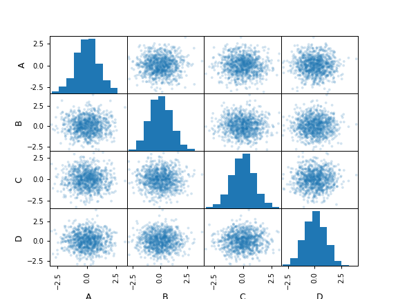

pandas.plotting.scatter_matrix#
- pandas.plotting.scatter_matrix(frame, alpha=0.5, figsize=None, ax=None, grid=False, diagonal='hist', marker='.', density_kwds=None, hist_kwds=None, range_padding=0.05, **kwargs)[source]#
Draw a matrix of scatter plots.
- Parameters:
- frameDataFrame
- alphafloat, optional
Amount of transparency applied.
- figsize(float,float), optional
A tuple (width, height) in inches.
- axMatplotlib axis object, optional
- gridbool, optional
Setting this to True will show the grid.
- diagonal{‘hist’, ‘kde’}
Pick between ‘kde’ and ‘hist’ for either Kernel Density Estimation or Histogram plot in the diagonal.
- markerstr, optional
Matplotlib marker type, default ‘.’.
- density_kwdskeywords
Keyword arguments to be passed to kernel density estimate plot.
- hist_kwdskeywords
Keyword arguments to be passed to hist function.
- range_paddingfloat, default 0.05
Relative extension of axis range in x and y with respect to (x_max - x_min) or (y_max - y_min).
- **kwargs
Keyword arguments to be passed to scatter function.
- Returns:
- numpy.ndarray
A matrix of scatter plots.
Examples
>>> df = pd.DataFrame(np.random.randn(1000, 4), columns=['A','B','C','D']) >>> pd.plotting.scatter_matrix(df, alpha=0.2) array([[<Axes: xlabel='A', ylabel='A'>, <Axes: xlabel='B', ylabel='A'>, <Axes: xlabel='C', ylabel='A'>, <Axes: xlabel='D', ylabel='A'>], [<Axes: xlabel='A', ylabel='B'>, <Axes: xlabel='B', ylabel='B'>, <Axes: xlabel='C', ylabel='B'>, <Axes: xlabel='D', ylabel='B'>], [<Axes: xlabel='A', ylabel='C'>, <Axes: xlabel='B', ylabel='C'>, <Axes: xlabel='C', ylabel='C'>, <Axes: xlabel='D', ylabel='C'>], [<Axes: xlabel='A', ylabel='D'>, <Axes: xlabel='B', ylabel='D'>, <Axes: xlabel='C', ylabel='D'>, <Axes: xlabel='D', ylabel='D'>]], dtype=object)
